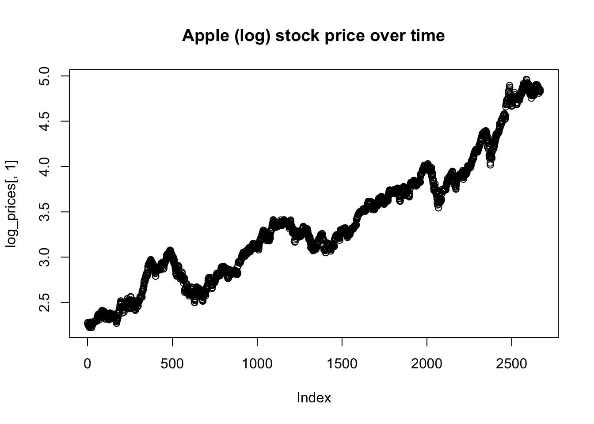
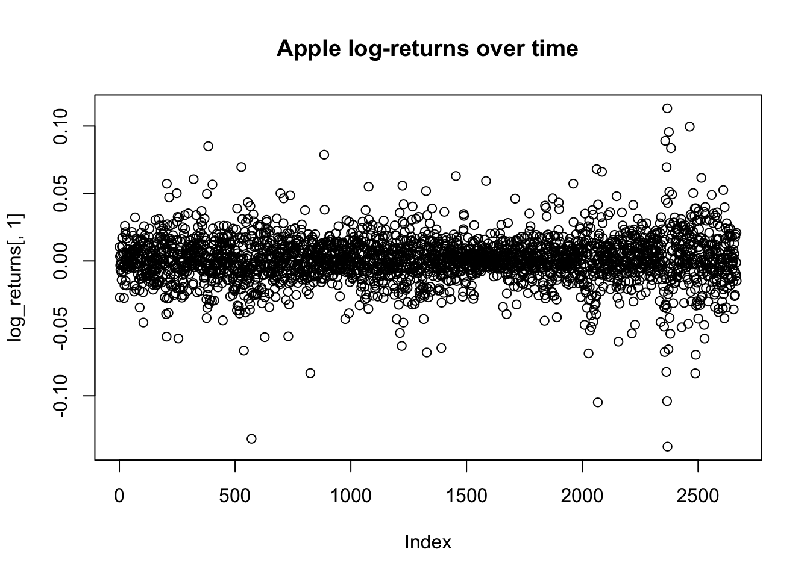
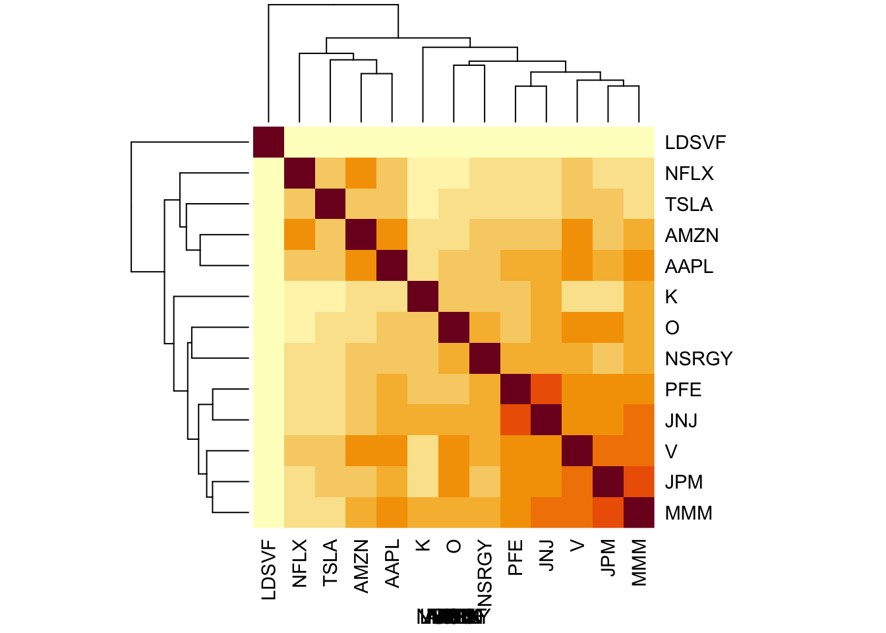

Last updated: 2021-05-22
Checks: 7 0
Knit directory: stat34800/analysis/
This reproducible R Markdown analysis was created with workflowr (version 1.6.2). The Checks tab describes the reproducibility checks that were applied when the results were created. The Past versions tab lists the development history.
Great! Since the R Markdown file has been committed to the Git repository, you know the exact version of the code that produced these results.
Great job! The global environment was empty. Objects defined in the global environment can affect the analysis in your R Markdown file in unknown ways. For reproduciblity it’s best to always run the code in an empty environment.
The command set.seed(20180411) was run prior to running the code in the R Markdown file. Setting a seed ensures that any results that rely on randomness, e.g. subsampling or permutations, are reproducible.
Great job! Recording the operating system, R version, and package versions is critical for reproducibility.
Nice! There were no cached chunks for this analysis, so you can be confident that you successfully produced the results during this run.
Great job! Using relative paths to the files within your workflowr project makes it easier to run your code on other machines.
Great! You are using Git for version control. Tracking code development and connecting the code version to the results is critical for reproducibility.
The results in this page were generated with repository version 1c35453. See the Past versions tab to see a history of the changes made to the R Markdown and HTML files.
Note that you need to be careful to ensure that all relevant files for the analysis have been committed to Git prior to generating the results (you can use wflow_publish or wflow_git_commit). workflowr only checks the R Markdown file, but you know if there are other scripts or data files that it depends on. Below is the status of the Git repository when the results were generated:
Ignored files:
Ignored: .Rhistory
Ignored: .Rproj.user/
Untracked files:
Untracked: analysis/currency_analysis.Rmd
Untracked: analysis/currency_read_transform.Rmd
Untracked: analysis/stocks_analysis.Rmd
Untracked: data/currency.csv
Untracked: data/prices.csv
Note that any generated files, e.g. HTML, png, CSS, etc., are not included in this status report because it is ok for generated content to have uncommitted changes.
These are the previous versions of the repository in which changes were made to the R Markdown (analysis/stocks.Rmd) and HTML (docs/stocks.html) files. If you’ve configured a remote Git repository (see ?wflow_git_remote), click on the hyperlinks in the table below to view the files as they were in that past version.
| File | Version | Author | Date | Message |
|---|---|---|---|---|
| Rmd | 1c35453 | Matthew Stephens | 2021-05-22 | workflowr::wflow_publish(“stocks.Rmd”) |
| html | 1dd5515 | Matthew Stephens | 2021-05-22 | Build site. |
| Rmd | e6d3362 | Matthew Stephens | 2021-05-22 | workflowr::wflow_publish(“stocks.Rmd”) |
| html | e0195f2 | Matthew Stephens | 2021-05-22 | Build site. |
| Rmd | 147eb45 | Matthew Stephens | 2021-05-22 | workflowr::wflow_publish(“stocks.Rmd”) |
Here I download and save some stock price data. I got some help from https://www.codingfinance.com/post/2018-03-27-download-price/
Here are the stocks I download:
# AAPL: Apple
# NFLX: Netflix
# AMZN: Amazon
# MMM: 3M
# K: Kellogs
# O: Realty Income Corp
# NSRGY: Nestle
# LDSVF: Lindt
# JPM: JP Morgan Chase
# JNJ: Johnson and Johnson
# TSLA: Tesla
# V: Visa
# PFE: PfizerHere I use the quantmod package to download and save the data:
library(tidyquant)Warning: package 'tidyquant' was built under R version 3.6.2Loading required package: lubridateWarning: package 'lubridate' was built under R version 3.6.2
Attaching package: 'lubridate'The following objects are masked from 'package:base':
date, intersect, setdiff, unionLoading required package: PerformanceAnalyticsLoading required package: xtsWarning: package 'xts' was built under R version 3.6.2Loading required package: zooWarning: package 'zoo' was built under R version 3.6.2
Attaching package: 'zoo'The following objects are masked from 'package:base':
as.Date, as.Date.numeric
Attaching package: 'PerformanceAnalytics'The following object is masked from 'package:graphics':
legendLoading required package: quantmodWarning: package 'quantmod' was built under R version 3.6.2Loading required package: TTRWarning: package 'TTR' was built under R version 3.6.2Registered S3 method overwritten by 'quantmod':
method from
as.zoo.data.frame zoo ══ Need to Learn tidyquant? ════════════════════════════════════════════════════
Business Science offers a 1-hour course - Learning Lab #9: Performance Analysis & Portfolio Optimization with tidyquant!
</> Learn more at: https://university.business-science.io/p/learning-labs-pro </>library(purrr)Warning: package 'purrr' was built under R version 3.6.2tickers = c("AAPL", "NFLX", "AMZN", "MMM", "K", "O", "NSRGY", "LDSVF", "JPM", "JNJ", "TSLA", "V", "PFE")
getSymbols(tickers)'getSymbols' currently uses auto.assign=TRUE by default, but will
use auto.assign=FALSE in 0.5-0. You will still be able to use
'loadSymbols' to automatically load data. getOption("getSymbols.env")
and getOption("getSymbols.auto.assign") will still be checked for
alternate defaults.
This message is shown once per session and may be disabled by setting
options("getSymbols.warning4.0"=FALSE). See ?getSymbols for details.pausing 1 second between requests for more than 5 symbols
pausing 1 second between requests for more than 5 symbols
pausing 1 second between requests for more than 5 symbols
pausing 1 second between requests for more than 5 symbols
pausing 1 second between requests for more than 5 symbols
pausing 1 second between requests for more than 5 symbols
pausing 1 second between requests for more than 5 symbols
pausing 1 second between requests for more than 5 symbols
pausing 1 second between requests for more than 5 symbols [1] "AAPL" "NFLX" "AMZN" "MMM" "K" "O" "NSRGY" "LDSVF" "JPM"
[10] "JNJ" "TSLA" "V" "PFE" prices <- map(tickers,function(x) Ad(get(x))) # gets the adjusted prices of each stock
prices <- reduce(prices,merge)
colnames(prices) <- tickers
head(prices) AAPL NFLX AMZN MMM K O NSRGY LDSVF
2007-01-03 2.573566 3.801429 38.70 52.71381 32.51891 13.37398 23.23697 NA
2007-01-04 2.630688 3.621429 38.90 52.50500 32.26753 13.47530 23.21061 NA
2007-01-05 2.611954 3.544286 38.37 52.14801 32.04837 13.07003 22.86792 NA
2007-01-08 2.624853 3.404286 37.50 52.26250 32.12571 13.03626 22.81520 NA
2007-01-09 2.842900 3.427143 37.78 52.32314 32.19663 13.17135 22.78884 NA
2007-01-10 2.978950 3.438571 37.15 52.43765 32.36421 13.22924 22.86792 NA
JPM JNJ TSLA V PFE
2007-01-03 33.34949 43.58500 NA NA 13.82006
2007-01-04 33.43275 44.12983 NA NA 13.86737
2007-01-05 33.15523 43.72942 NA NA 13.82532
2007-01-08 33.26624 43.65722 NA NA 13.75173
2007-01-09 33.12750 43.49312 NA NA 13.75698
2007-01-10 33.37030 43.42091 NA NA 13.77275Some companies (eg TLSA) were not listed for the entire period avoilable. I’m going to narrow down the time window so no missing data. This ends up with the period 2010-10-15 to 2021-05-21.
nomiss = function(x){all(!is.na(x))}
prices = prices[apply(prices,1,nomiss),]
head(prices) AAPL NFLX AMZN MMM K O NSRGY LDSVF
2010-10-15 9.665921 22.24571 164.64 66.58378 35.79071 21.30972 40.26300 2262.3
2010-10-18 9.766039 21.85714 163.56 66.97220 35.80500 21.59911 40.36640 2262.3
2010-10-19 9.504692 21.33286 158.67 66.14308 35.66207 21.46981 39.44311 2262.3
2010-10-20 9.536628 21.87857 158.67 66.83025 35.74784 21.95006 40.10788 2262.3
2010-10-21 9.505616 24.67000 164.97 67.63698 35.55486 21.89465 40.78743 2262.3
2010-10-22 9.442654 24.01429 169.13 67.55482 35.41193 21.85154 39.79028 2262.3
JPM JNJ TSLA V PFE
2010-10-15 27.92472 46.70719 4.108 17.96467 11.31108
2010-10-18 28.71398 46.92027 4.046 18.14062 11.34294
2010-10-19 28.33062 46.50147 4.010 17.95310 11.08167
2010-10-20 28.63881 46.72923 4.130 18.40916 11.25372
2010-10-21 28.33813 47.01579 4.150 18.33507 11.23461
2010-10-22 28.33813 46.88353 4.144 18.35591 11.15177tail(prices) AAPL NFLX AMZN MMM K O NSRGY LDSVF JPM
2021-05-14 127.45 493.37 3222.90 202.8870 66.54 65.34 120.89 9200.0 164.01
2021-05-17 126.27 488.94 3270.39 203.6117 66.32 65.40 121.31 9300.0 164.67
2021-05-18 124.85 486.28 3232.28 201.5469 66.04 65.48 121.57 9300.0 162.35
2021-05-19 124.69 487.70 3231.80 201.1200 66.04 65.66 121.07 9299.8 161.11
2021-05-20 127.31 501.67 3247.68 201.6500 66.32 66.91 122.78 9250.0 160.83
2021-05-21 125.43 497.89 3203.08 201.8600 66.50 66.58 123.07 9250.0 162.66
JNJ TSLA V PFE
2021-05-14 170.22 589.74 226.94 40.02
2021-05-17 170.39 576.83 226.44 40.11
2021-05-18 170.45 577.87 225.57 40.05
2021-05-19 170.08 563.46 224.59 39.83
2021-05-20 171.07 586.78 226.44 40.12
2021-05-21 170.96 580.88 226.77 39.95write.csv(prices, file="../data/prices.csv",quote=FALSE,row.names=FALSE)Here are brief suggestions for reading and processing the data. First since stocks are positive, and what generally matters in stocks is percentage change in price, it makes sense to take logs and look at differences. These are called “log-returns” in finance. Here I load in the data and compute the log returns.
prices = read.csv("../data/prices.csv")
log_prices = log(prices)
log_returns = apply(log_prices,2, diff)Note that while the stock prices from day to day are highly correlated (as they form a time series), log returns are much less correlated (and so easier to study and model statistically).
plot(log_prices[,1], main="Apple (log) stock price over time")
plot(log_returns[,1], main="Apple log-returns over time")
One question of interest is to what extent changes in stocks are correlated with one another. Here is an initial plot showing some of the correlation structure in the data….
S = cor(log_returns)
heatmap(S, xlab = names(prices), symm=TRUE)
sessionInfo()R version 3.6.0 (2019-04-26)
Platform: x86_64-apple-darwin15.6.0 (64-bit)
Running under: macOS 10.16
Matrix products: default
BLAS: /Library/Frameworks/R.framework/Versions/3.6/Resources/lib/libRblas.0.dylib
LAPACK: /Library/Frameworks/R.framework/Versions/3.6/Resources/lib/libRlapack.dylib
locale:
[1] en_US.UTF-8/en_US.UTF-8/en_US.UTF-8/C/en_US.UTF-8/en_US.UTF-8
attached base packages:
[1] stats graphics grDevices utils datasets methods base
other attached packages:
[1] purrr_0.3.4 tidyquant_1.0.3
[3] quantmod_0.4.18 TTR_0.24.2
[5] PerformanceAnalytics_2.0.4 xts_0.12.1
[7] zoo_1.8-8 lubridate_1.7.9.2
loaded via a namespace (and not attached):
[1] Rcpp_1.0.6 pillar_1.4.6 compiler_3.6.0 later_1.1.0.1
[5] git2r_0.27.1 workflowr_1.6.2 tools_3.6.0 digest_0.6.27
[9] gtable_0.3.0 jsonlite_1.7.2 evaluate_0.14 lifecycle_1.0.0
[13] tibble_3.0.4 lattice_0.20-41 pkgconfig_2.0.3 rlang_0.4.10
[17] cli_2.4.0 rstudioapi_0.13 curl_4.3 yaml_2.2.1
[21] xfun_0.16 dplyr_1.0.2 httr_1.4.2 stringr_1.4.0
[25] knitr_1.29 generics_0.0.2 fs_1.5.0 vctrs_0.3.8
[29] tidyselect_1.1.0 rprojroot_1.3-2 grid_3.6.0 glue_1.4.2
[33] R6_2.4.1 Quandl_2.10.0 rmarkdown_2.3 ggplot2_3.3.2
[37] magrittr_1.5 whisker_0.4 scales_1.1.1 backports_1.1.10
[41] promises_1.1.1 ellipsis_0.3.1 htmltools_0.5.0 colorspace_1.4-1
[45] httpuv_1.5.4 quadprog_1.5-8 stringi_1.4.6 munsell_0.5.0
[49] crayon_1.3.4